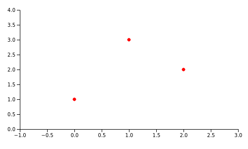
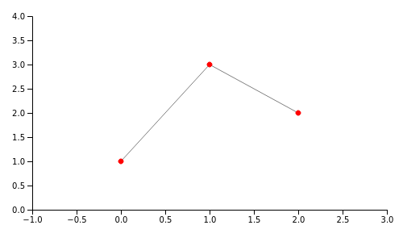
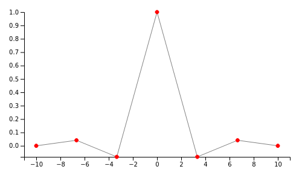
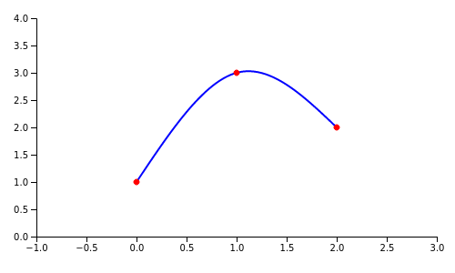
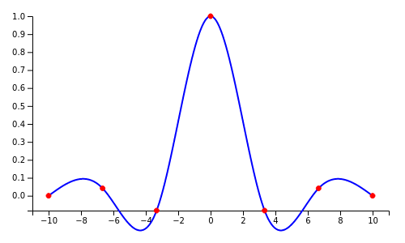

This post explains how cubic spline interpolation works, and presents a full implementation in JavaScript, hooked up to a SVG-based visualization. As a side effect, it also covers Gaussian elimination and presents a JavaScript implementation of that as well.
I love topics that mix math and programming in a meaningful way, and cubic spline interpolation is an excellent example of such a topic. There's a bunch of linear algebra here and some calculus, all connected with code to create a useful tool.
Motivation
In an interpolation problem, we're given a set of points (we'll be using 2D points X,Y throughout this post) and are asked to estimate Y values for Xs not in this original set, specifically for Xs that lie between Xs of the original set (estimation for Xs outside the bounds of the original set is called extrapolation).
As a concrete example, consider the set of points (0, 1), (1, 3), (2, 2); here they are plotted in the usual coordinate system:
Interpolation is estimating the value of Y for Xs between 0 and 2, given just this data set. Obviously, the more complex the underlying function/phenomenon, and the fewer original points we're given, interpolation becomes more difficult to do accurately.
There are many techniques to interpolate between a given set of points. Polynomial interpolation can perfectly fit N points with an N-1 degree polynomial, but this approach can be problematic for large a N; high-degree polynomials tend to overfit their data, and suffer from other numerical issues like Runge's phenomenon.
Instead of interpolating all the points with a single function, a very popular alternative is using Splines, which are piece-wise polynomials. The idea is to fit a low-degree polynomial between every pair of adjacent points in the original data set; for N points, we get N-1 different polynomials. The simplest and best known variant of this technique is linear interpolation:
Linear interpolation has clear benefits: it's very fast, and when N is large it produces reasonable results. However, for small Ns the result isn't great, and the approximation is very crude. Here's the linear spline interpolation of the Sinc function sampled at 7 points:
We can certainly do much better.
How about higher-degree splines? We can try second degree polynomials, but it's better to jump straight to cubic (third degree). Here's why: to make our interpolation realistic and aesthetically pleasing, we want the neighboring polynomials not only to touch at the original points (the linear splines already do this), but to actually look like they're part of the same curve. For this purpose, we want the slope of the polynomials to be continuous, meaning that if two polynomials meet at point P, their first derivatives at this point are equal. Moreover, to ensure smoothness and to minimize needless bending [1], we also want the second derivatives of the two polynomials to be equal at P. The lowest degree of polynomial that gives us this level of control is 3 (since the second derivative of a quadratic polynomial is constant); hence cubic splines.
Here's a cubic spline interpolating between the three points of the original example:
And the Sinc function:
Because of the continuity of first and second derivatives, cubic splines look very natural; on the other hand, since the degree of each polynomial remains at most 3, they don't overfit too much. Hence they're such a popular tool for interpolation and design/graphics.
All the plots in this post have been produced by JavaScript code that implements cubic spline interpolation from scratch. Let's move on to learn how it works.
Setting up equations for cubic spline interpolation
Given a set of N points, we want to produce N-1 cubic polynomials between these points. While these are distinct polynomials, they are connected through mutual constraints on the original points, as we'll see soon.
More formally, we're going to define N-1 polynomials in the inclusive range :
For each polynomial, we have to find 4 coefficients: a, b, c and d; in total, for N-1 polynomials we'll need 4N-4 coefficients. We're going to find these coefficients by expressing the constraints we have as linear equations, and then solving a system of linear equations. We'll need 4N-4 equations to ensure we can find a unique solution for 4N-4 unknowns.
Let's use our sample set of three original points to demonstrate how this calculation works: (0, 1), (1, 3), (2, 2). Since N is 3, we'll be looking for two polynomials and a total of 8 coefficients.
The first set of constraints is obvious - each polynomial has to pass through the two points it's interpolating between. The first polynomial passes through the points (0, 1) and (1, 3), so we can write the equations:
The second polynomial passes through the points (1, 3) and (2, 2), resulting in the equations:
We have 4 equations, and need 4 more.
We constrain the first and second derivatives of the polynomials to be equal at the points where they meet. In our example, there are only two polynomials that meet at a single point, so we'll get two equations: their derivatives are equal at point (1, 3).
Recall that the first and second derivatives of a cubic polynomial are:
The equation we get from equating the first derivatives is:
Or, expressed as a linear equation of all coefficients:
Similarly, the equation we get from equating the second derivatives is:
Expressed as a linear equation of all coefficients:
This brings us to a total of 6 equations. The last two equations will come from boundary conditions. Notice that - so far - we didn't say much about how our interpolating polynomials behave at the end points, except that they pass through them. Boundary conditions are constraints we create to define how our polynomials behave at these end points. There are several approaches to this, but here we'll just discuss the most commonly-used one: a natural spline. Mathematically it says that the first polynomial has a second derivative of 0 at the first original point, and the last polynomial has a second derivative of 0 at the last original point. In our example:
Substituting the second derivative equations:
We have 8 equations now:
To restate the obvious - while our example only uses 2 polynomials, this approach generalizes to any number. For N original points, we'll interpolate with N-1 polynomials, resulting in 4N-4 coefficients. We'll get:
- 2N-2 equations from setting the points these polynomials pass through
- N-2 equations from equating first derivatives at internal points
- N-2 equations from equating second derivatives at internal points
- 2 equations from boundary conditions
For a total of 4N-4 equations.
The code that constructs these equations from a given set of points is available in this file.
Solving the equations
We now have 8 equations with 8 variables. Some of them are trivial, so it's tempting to just solve the system by hand, and indeed one can do it very easily. In the general case, however, it would be quite difficult - imagine interpolating 10 polynomials resulting in 36 equations!
Fortunately, the full power of linear algebra is now at our disposal. We can express this set of linear equations as a matrix multiplication problem , where A is a matrix of coefficients, x is a vector of unknowns and b is the vector of right-hand side constants:
Solving this system is straightforward using Gaussian elimination. Our JavaScript implementation does this in a few steps:
- Performs Gaussian elimination to bring A into row-echelon form, using the algorithm outlined on Wikipedia. This approach tries to preserve numerical stability by selecting the row with the largest (in absolute value) value for each column [2].
- Further transforms the resulting matrix into reduced row-echelon form (a.k.a. Gauss-Jordan elimination)
- Extracts the solution.
In our example, the solution ends up being the vector (-0.75, 0, 2.75, 1, 0.75, -4.5, 7.25, -0.5); therefore, the interpolating polynomials are:
Performing the interpolation itself
Now that we have the interpolating polynomials, we can generate any number of interpolated points. For all x between 0 and 1 we use , and for x between 1 and 2 we use . In our JavaScript code this is done by the doInterpolate function. We've already seen the result:
Code
The complete code sample for this post is available on GitHub. It includes functions for constructing equations for cubic splines from an original set of points, code for solving linear equations with Gauss-Jordan elimination, and a demo HTML page that plots the points and linear/spline interpolations.
The code is readable, heavily-commented JavaScript with no dependencies (except D3 for the plotting).
An additional demo that uses similar functionality is line-plotting; it plots arbitrary mathematical functions with optional interpolation (when the number of sampled points is low).
| [1] | This requirement actually has neat historical roots. In the days before computers, "splines" were elastic rulers engineers and drafters would use to interpolate between points by hand. These rulers would bend and connect at the original points, and it was considered best practice to minimize bending. |
| [2] | This helps avoid division by very small numbers, which may cause issues when using finite-precision floating point. |